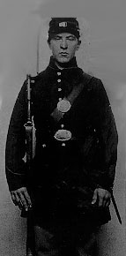

|

NAME: Sarah Rosetta Wakeman/Lyons Wakeman
BORN: 1843
DIED: 1864
ALLEGIANCE: Union
HIGHEST RANK: Private
UNIT: 153rd New York Infantry, Company H
|
|
Sarah Rosetta Wakeman was a twenty year old woman from an
Afton, New York farming family who disguised herself as a
man to enlist in the 153rd New York Volunteer Infantry
Regiment in the summer of 1862. Rosetta (as she was called
by her family), who used the name Lyons Wakeman, enrolled
for three years or the duration of the war. Described on the
roll as "five feet tall, fair complected with brown hair,
blue eyes" she listed her previous occupation as "boatman."
Rosetta was mustered into, service in the U.S. army on
October 17, 1862 and left for Washington D.C. where she and
the 153rd would be assigned to guard duty in the defense of
the Capitol City. She wrote this letter to her parents in
early 1863: "Dear Parents, lt is with affectionate love that
I write to you and let you know that I am well at Present
and enjoying myself the best I can. I can tell you what made
me leave home. It was because I had got tired of staying in
that neighborhood. I knew that I could help you more to
leave home than to stay there with you. So I left. I am not
sorry that I left you I believe it will be all for the best
yet. I believe that God will spare my life to come home once
more. When I get out of this war I will come home and see
you but I shall not stay long before I shall be off to take
care of my Self. I will help you out as long as I live...I
don't want you to mourn about me for I can take care of my
Self and I know my business as well as other folks know them
for me. I will Dress as I am a mind to for all anyone else
cares, and if they don't let me Alone they will be sorry for
it."
From the relatively easy duty of guarding the defenses of
Washington City the 153rd New York was transferred to the
field in late Feb. 1864 to help in Major General Nathaniel
P. Banks's Red River Campaign in Louisiana. Rosetta tried to
reassure her anxious parents with these words: "I don't know
how long before I shall have to go into the field of battle.
For my part I don't care. I don't feel afraid to go. I don't
believe there are any Rebel's bullet made for me yet." The
Red River campaign was a notable failure which featured a
700 mile march from New Orleans to Shreveport to clear the
countryside of Confederate troops. Describing this march
after the war, one veteran said: "No tongue can tell nor pen
indite the hardships...endured on that march...through an
enemies country, where with a scarcity of water, any slough
was sought for with eagerness, and though animals partly
decomposed and reeking with their millions of parasites were
floating upon its surface, [the regiment was] obliged to
drink its waters to allay the thirst caused by that southern
sun." The Union troops were badly beaten in a couple of
engagements at Sabine Cross Roads and Pleasant Hill. Pvt.
Wakeman participated in the battle of Pleasant Hill where,
as she put it, she, "received [her] initial fire and felt
the dread realities of war." The dreadful conditions of the
march (bad water, poor diet, the heat and humidity of the
Louisiana bayou country) decimated the green troops of the
153rd (as well as thousands of others), who sickened and
died in great numbers. By the end of the campaign, Rosetta,
weakened by chronic diarrhea, was transferred to the Union
hospital at New Orleans, where she died on June 19, 1864, and
where there was no record of a discovery of her gender. (Her
correspondence to her parents and other documentation of her
soldierhood has only recently come to the attention of
historians.)
Source: Christopher Bates for the History 139A website.
|